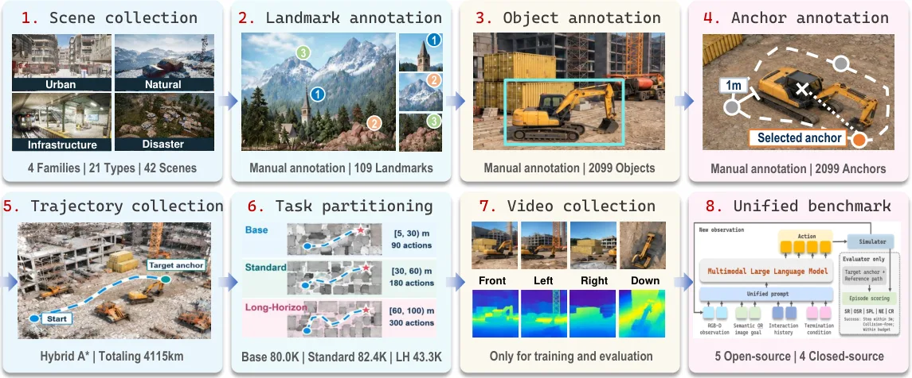
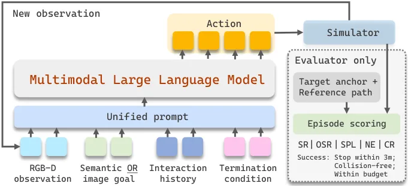

AerialDojo-200K：开放世界空中目标搜索的大规模基准套件
AerialDojo-200K: A Large-Scale Benchmark Suite for Open-World Aerial Object-Goal Search
42 场景 / 205,732 任务实例 / 参考轨迹总长 4,115.313 km 的空中目标搜索基准；最好模型在 3 m 阈值下 Base SR 仅 3.20%（Claude Opus 5），Standard 0.49%，把阈值放宽到 5 m 时 Gemini 3.8 Flash 从 2.40% 跳到 11.16% 并反超，说明排名对成功半径极敏感。
task instances
best SR
radius sensitivity
作者、单位与技术谱系 · Research context
作者与单位
研究脉络
- UAV-ON（前最大空中目标搜索基准）方法基座关系：本篇以 UAV-ON 为对标基线，在场景数与任务实例数上分别做到其 3 倍与 18.7 倍，并改变起点初始化方式[论文摘要与 Task Definition 正文]
- ProjectAirSim 与 Unreal Engine（仿真基座）上游工作关系：基准环境完全建立在这两者之上，相机/FOV/FPS/动作接口都由该仿真栈提供[论文 Simulator 一节]
- 参考轨迹规划（Adapted Hybrid A*）上游工作关系：把经典 Hybrid A* 适配到四自由度空中动作空间，用来生成无碰撞参考轨迹与任务难度分层[论文 Task and Dataset 一节]
- 地标 + 方向的目标表示与 ID/OOD 协议本篇推进关系：在既有空中目标导航任务上新增“地标 + 八方位方向 + 语义/图像表示”的目标规格与双分布评测协议[论文 Benchmark 一节]
合作网络
- 清华 BNRist ↔ 都柏林大学学院 ↔ 北京大学 ↔ 浙江工业大学（共同署名）清华大学（BNRist / 计算机科学与技术系） → 都柏林大学学院 / 北京大学 / 浙江工业大学关系：跨机构共同署名（作者块上标标注 4 个单位）[arXiv abs 页面（作者与单位）]
- Tongtong Feng ↔ Xin Wang（同单位共同署名与通讯关系）Tongtong Feng → Xin Wang关系：共同署名 + 通讯作者标注（作者块 Corresponding Authors）[arXiv abs 页面（作者块）]
作者与单位信息取自论文作者块的上标编号与致谢行，通讯作者以作者块“Corresponding Authors.”标注为准；脉络条目中 UAV-ON、ProjectAirSim 等上游工作名称出现在论文正文与摘要，但本次取得的 LaTeX 源不含 .bbl，未逐条核对被引文献的完整条目标题。
方法本质拆解 · What actually changed
是不是微调？
本文不训练任何模型，它交付的是数据、仿真环境与评测协议；被评的 9 个多模态大模型（Qwen3-VL-4B、InternVL3.5-8B、Ministral 3 8B、Phi-4-multimodal、MiniCPM-V 4.6 与 GPT-5.6 Sol、Grok-4.5、Gemini 3.8 Flash、Claude Opus 5）都以固定提示词、经模型专用适配器接入闭环，权重不变。唯一与“训练数据”相关的是基准划分：分布内场景 80% 训练 / 20% 评测，分布外场景 20% 构成自适应子集、80% 留作测试。
有没有额外约束？
约束主要落在接口与任务定义上：观测只有四路机载 RGB-D，明确排除 GPS、外部定位信号与全局地图，并扣留物体位姿、语义地图与场景几何等仿真真值；动作被限制为八类 16 个离散选择且不含后退；成功判据要求在 3 m 内显式 Stop、不允许碰撞、不得超出动作预算；任务构造还要求起点到目标欧氏距离大于 3 m、参考轨迹长度在 5–100 m 且绕行比不低于 1.05，以剔除平凡算例。目标的“地标 + 八方位方向”结构也是任务侧的强先验，模型必须按人类式的“先找地标再定向”策略来搜索。
推理/后端到底做了什么？
推理是纯闭环调用：每步把当前 RGB-D、目标规格、终止条件与交互历史按固定提示打包，模型返回一个动作，再由模型专用适配器映射到统一的仿真动作接口；执行后更新观测与日志，episode 在 Stop、碰撞或预算耗尽时终止。没有策略训练、没有在线优化、没有地图构建或位姿估计后端，也没有记忆模块——空间认知必须完全由模型在上下文里完成。基础设施层面的失败会单独记录并重跑。
方法本质是什么？
本质是把“开放世界空中搜索”的不确定性用统一接口固定下来，再用大规模、约束标注的任务与分层难度把不同模型放到同一尺子上；它改变的不是某个模型的精度，而是评测变量的可控性：目标表示（语义/图像）、空间参照（地标 + 方向）、难度（Base/Standard/Long-Horizon）、分布（ID/OOD）与成功容差都被显式参数化。它没有做的是：不提供求解方法、不训练策略、不做位姿估计，也不验证仿真到真实的可迁移性。
输入=四路机载 RGB-D（无 GPS/外部定位/全局地图）+ 地标-方向-表示形式的目标描述；改变的位置=被评模型的输入上下文与动作输出（模型权重不变），以及评测侧的难度/分布/容差参数；动作=固定提示下的闭环调用 + 统一适配器映射到 16 个离散动作，成功判据为 3 m 内无碰撞 Stop；直接效果=给出 205,732 个任务实例上“最好 Base SR 3.20%、Standard 0.49%”的定量结论，并证明排名对成功半径高度敏感。

桥接价值Bridge
桥接价值
这篇工作最有价值的部分是评测协议而不是模型：它把 42 个场景划成 21 个分布内与 21 个分布外场景，并允许模型先用 20% 的分布外子集做目标域自适应再在剩余 80% 上测试，这正好是我们在跨数据集/跨场景验证时需要的“有限自适应”设定。第二个可借的点是成功判据敏感性分析：同一个模型在 3 m 与 5 m 成功半径下从 2.40% 跳到 11.16%、并在 Standard 任务上出现排名反转，说明“用哪个半径定义成功”会直接改变结论，这对我们做 PPP/组合定位的横向比较（例如固定解与浮点解的排序）是现成的警示。第三，它明确把 GPS、外部定位信号与全局地图从观测接口里排除，并扣留目标坐标与参考轨迹只给评测器，这种隔离设计让“能不能自己建立空间认知”成为一个可测问题。
方法与模块Method
方法摘要
基准构建在 Unreal Engine + ProjectAirSim 上，提供四路同步机载相机（前/左/右/下，RGB 与深度均为 640×640、90° FOV、15 FPS），观测接口不含 GPS、外部定位与全局地图，仿真真值（物体位姿、语义地图、场景几何）也不给智能体。动作是八类、共 16 个离散选择：前进/左移/右移各支持 1、3、5 m，上/下支持 1、2 m，转向每次 15°，加一个 Stop；不允许后退以抑制来回振荡。任务定义为“起点位姿 + 实例级目标”，目标由名称、最近地标、相对地标的八方位方向、以及语义描述或参考图像组成，于是分为 SemanticOGS 与 ImageOGS；成功率定义为在不发生碰撞且未超动作预算的前提下于目标锚点 3 m 内显式 Stop。参考轨迹由适配四自由度动作的 Hybrid A* 规划并做碰撞检查，任务按轨迹长度分入 Base/Standard/Long-Horizon（Base 参考长度 5–30 m、预算 90 步；Standard 30–60 m、预算 180 步）。
可迁移模块
第一，双阈值报告法：把主判据（3 m、与提示词一致）与补充判据（5 m）同时给出，并显式检查排名是否反转，可以作为我们任何涉及“到达/固定”判定的评测规范。第二，OOD 划分 + 20% 目标域自适应子集的协议，可以直接套用到我们跨场景的定位/建图实验里，用来区分“零样本泛化”与“少量目标域数据能回收多少”。第三，任务难度分层（按参考轨迹长度 + 绕行比 κ≥1.05 过滤近直线任务）是一种便宜的“去平凡样本”手段，能提升成功率指标的区分度，我们可以照此过滤掉太容易的算例。第四，地标 + 方向 + 表示三元组的目标描述方式，为“用可识别空间参照锚定搜索”提供了任务侧模板。

证据Evidence
关键证据与数字
数据规模：205,732 个任务实例（102,866 SemanticOGS + 102,866 ImageOGS），42 个场景、2,099 个目标物体、254 个语义类别、109 个地标、参考轨迹总计划距离 4,115.313 km；人工标注由 12 名标注者耗时两个月完成，锚点定义为目标边界外 1 m、朝向物体质心的无碰撞视点。评测结果（Base，3 m 主阈值）：Claude Opus 5 最高 3.20% SR、GPT-5.6 Sol 2.81%、Gemini 3.8 Flash 2.40%，开源最好 Qwen3-VL-4B 0.71%，Grok-4.5 仅 0.25%；Standard 任务上 GPT-5.6 Sol 0.26%、Claude Opus 5 0.49%（OSR 1.32%）。敏感性：把半径放宽到 5 m，Gemini 3.8 Flash 由 2.40% 升到 11.16%（+8.76 pt）并反超 GPT-5.6 Sol（8.16%）与 Claude Opus 5（7.38%）；Standard 上排名反转——3 m 时 Claude Opus 5 领先，5 m 时 GPT-5.6 Sol 以 2.30% 领先 1.29%。失败结构：Claude Opus 5 Base 的 OSR 为 7.84% 但 SR 只有 3.20%，同时碰撞率高达 58.96%，即“进过目标区但停不下来/被碰撞终止”。场景族差异：3 m 下 GPT-5.6 Sol 在 Natural 4.08%、Infrastructure 3.06% 最好，Claude Opus 5 在 Disaster 4.85% 最好但在 Infrastructure 只有 0.98%。
边界与下一步Limits & Next Step
边界与风险
所有评测都在仿真（Unreal Engine + ProjectAirSim）中完成，论文没有实飞实验，也没有讨论仿真到实机的差距。绝对成功率极低（最好 3.20%），作者明确说聚合指标无法区分“没找到目标”“找到了但停下失败”“被碰撞打断”三类原因，因此不能把低成功率直接归因于某一项能力缺失。论文未提供人类操作基线或经典非学习方法基线，3.20% 这一数字缺少外部参照。评测对象以通用多模态大模型为主，适配器与提示词被固定（Appendix 给出统一提示），所以结果反映的是“固定接口下的零样本/少样本能力”，而不是这些模型的上限。对我们而言还要注意：它的智能体只接收机载 RGB-D、没有 GPS 与外部定位，因此与我们的 GNSS/INS 组合路线不是同一问题设定，其“位置不确定性”来源是视觉认知而非观测量噪声。
下一步实验
第一，复现“成功阈值改变导致排名反转”这一现象，在我们的数据上做最小对照：例如同一批序列上比较固定解与浮点解的排序是否随 3 m/5 m 这类容差选择而反转，并据此固定对外汇报的判据。第二，把 OOD 划分 + 20% 自适应子集移植到我们的跨场景实验，先量化“允许少量目标域数据”能回收多少泛化损失，再决定是否需要在线自适应。第三，借用它的分层过滤（轨迹长度 + 绕行比）清理我们评测集里的平凡算例，提升指标的区分度；第四，把“到达但未能成功终止”这类失败单独统计（对应 OSR 与 SR 的差距），在我们自己的报告里作为独立失败模式列出。

